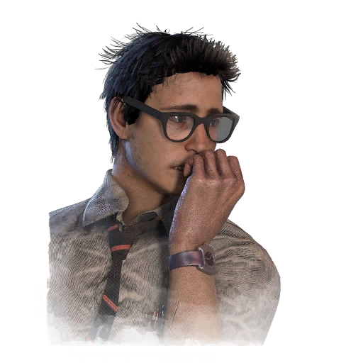

Dwight Fairfield
Perks:
 Fais tes Preuves
Fais tes Preuves Lien
Lien Meneur
Meneur
Une Histoire Supplémentaire peut être trouvée dans le Tome 3 - Escalade : Histoire Sous un Autre Nom.
Dwight a été un élève chétif et débile durant toutes ses années de lycée. Il voulait toujours faire partie des gamins cool mais manquait de charisme. Il tenta d'intégrer l'équipe de football américain mais fut rejeté, celle de basketball ne prit même pas en compte sa candidature et ses notes étaient bien en-dessous de la moyenne. Un week-end, lors d'un exercice de cohésion d'équipe à son travail minable, le patron de Dwight les emmena au plus profond des bois avant de leur divulguer sa recette de famille pour l'alcool de contrebande. Dwight se souvint avoir bu la première gorgée avant de se réveiller tard le lendemain matin, tout seul. Durant la nuit, les autres l'avaient abandonné. Une fois de plus risée de la communauté, Dwight tenta de cheminer hors des bois. C'est la dernière fois que l'on entendit parler de Dwight Fairfield.
Dwight n'est pas le gars typique auquel vous pensez quand on vous parle de "Survivant". Il lui manque ce petit piquant et sans ses lunettes, il est plus ou moins aveugle. Mais alors que le soleil se couche et que les bois s'animent, Dwight s'accroche à sa vie de rat de course, s'assurant qu'il vivra pour voir un autre jour même si quelque chose d'inimaginable est après lui. Dwight ne s'arrêtera pas. Il survivra quoi qu'il arrive. Alors que d'autres passaient des heures à se montrer au lycée, il passait des heures à devenir invisible et à éviter le danger. Et peu importe que les dangers se trouvent dans un couloir ou dans les bois. Survivre est la clé. Alors que d'autres employés paniquent lorsque la terreur les envahit, Dwight utilise son expérience troublante d'adolescent. La roue a désormais tourné, et d'autres doivent maintenant suivre les instructions fermes de Dwight s'ils veulent survivre, car il sait comment disparaître.
 Adrénaline
Adrénaline Course Effrénée
Course Effrénée Rapide et Silencieux
Rapide et Silencieux